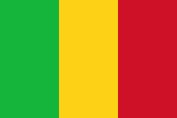

<!-- <ion-tabs>

  <ion-tab-bar slot="bottom">
    <ion-tab-button tab="declarations">
      <ion-icon name="folder" ios="ios-folder"></ion-icon>
      <ion-label>decl1</ion-label>
    </ion-tab-button>

    <ion-tab-button tab="allstructure">
      <ion-icon name="compass" ios="ios-compass"></ion-icon>
      <ion-label>all 2</ion-label>
    </ion-tab-button>

    <ion-tab-button tab="accueil">
      <ion-icon name="home" ios="ios-home"></ion-icon>
      <ion-label>Accu</ion-label>
    </ion-tab-button>

    <ion-tab-button tab="aide">
      <ion-icon name="help-circle" ios="ios-help-circle"></ion-icon>
      <ion-label>aide 4</ion-label>
    </ion-tab-button>

    <ion-tab-button tab="connexion">
      <ion-icon name="person" ios="ios-person"></ion-icon>
      <ion-label>profil</ion-label>
    </ion-tab-button>

  </ion-tab-bar>

</ion-tabs> -->

<ion-app>
  <ion-split-pane contentId="main"  >
    <!--  the side menu  -->
    <ion-menu contentId="main">
  

      <ion-content>
        <!-- image de l'entreprise -->
        <div class="row mt-3">
          
        </div>
        <!-- image de l'utilisateur -->
        <div class="row mt-2">
          <div class="col align-self-center text-center" routerLink="/dashboard/profil">
            <!-- <imgclass="imageUtilisateur" alt="Silhouette of mountains" src="../../assets/avatar.png" />
             -->
            

          </div>

        </div>
        <!-- les informations consernant l'utilisateur -->
        <div class="row ">
          <div class="col">
            <div class="text-center nomUtilisateur">
              <!-- {{Utilisateur.prenom}} {{Utilisateur.nom}} -->
              Pour la numérisation de vos processus administratif
            </div> 
          </div>
        </div>
        <!-- Ligne pour recuperer le role de l'utilisateur
          
          <div class="row ">
          <div class="col">
            <div class="text-center statusUtilisateur">
              {{Utilisateur.role.libellerole}}
              userrrrr
            </div>
          </div>

        </div> -->


        <!-- le reste de contenu de sidebar -->
        <div class="row mt-2 ">

          <ion-item (click)="FermerSideBar()" lines="none" routerDirection='root'  routerLink="/tabs/accueil"
            routerLinkActive='active-item'>
            
             &nbsp;&nbsp;&nbsp;
            <ion-label class="lienPage">Accueil</ion-label>
          </ion-item>

          <ion-item lines="none" routerDirection='root' routerLink="/tabs/allstructure"
          routerLinkActive='active-item'>
           &nbsp;&nbsp;&nbsp;
          <ion-label class="lienPage">Structures</ion-label>
          </ion-item>

          <ion-item  lines="none" routerLink="/tabs/declarations" routerLinkActive='active-item'>
            
             &nbsp;&nbsp;&nbsp;
            <ion-label class="lienPage">Déclarations</ion-label>
          </ion-item>

          <ion-item  lines="none" routerLink="/tabs/rendezvous" routerLinkActive='active-item'>
            
             &nbsp;&nbsp;&nbsp;
            <ion-label class="lienPage">Rendez-Vous</ion-label>
          </ion-item>

          <ion-item  lines="none" routerLink="/tabs/rendezvous" routerLinkActive='active-item'>
            
             &nbsp;&nbsp;&nbsp;
            <ion-label class="lienPage">Guide</ion-label>
          </ion-item>
          
         
        </div>


        <div class="d-grid gap-2 mx-auto mt-2">
          <button class="btn btn- butonDeconnexion m-2 " (click)="logout()" expand="block">Deconnexion</button>
        </div>

      </ion-content>
    </ion-menu>
  
    <!-- the main content -->
    <ion-router-outlet id="main">

       </ion-router-outlet>
  </ion-split-pane>
</ion-app>